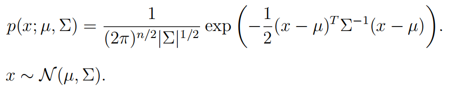
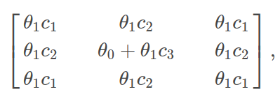
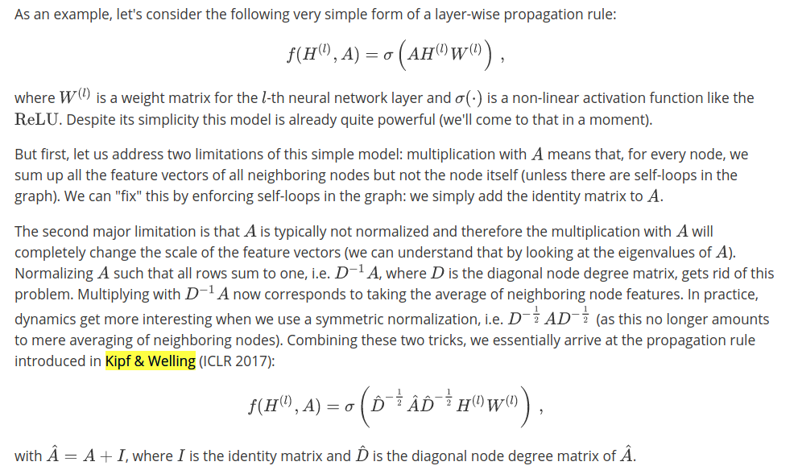

normalized Laplacian
-
Random walk normalized Laplacian
-
analogy to The Multivariate Gaussian Distribution
 -
Symmetric normalized Laplacian L:


first generation of GNC
second generation of GNC


- if k == n, receptive field is n hop

-
where
$$c_1$$ ,$$c_2$$ and$$c_3$$ are fixed -
The only trainable parameters are
$$\theta_0$$ and$$\theta_1$$ -
in the final version the authors even further fix
$$\theta_0 = -\theta_1$$
